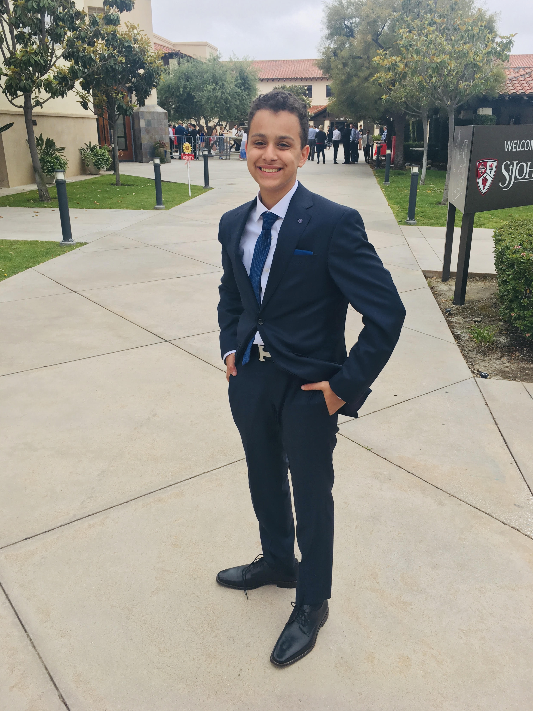

About me

Hi, my name is Luke Soliman. I am 14 years old, and I love learning new skills. I made this website as a challange. I got the basics from a friend, and now I am trying to figure this out on my own. I play many instruments including: trumpet, drums, piano, and guitar. My most recent insxtrument is the guitar which i started about 3 months ago. I aslo play many sports including: volleyball, fencing, soccer, and golf. I started Golf over the summer of 2019, it was fun, but hard to first start. I also enjoy programming, cooking, and eating. Finally I joined the robotics team this year and really enjoy the desgin and build process. I learned CAD on Fusion 360 and it really helps me out in the real world. I also learned how to use a CNC and mill in robotics.